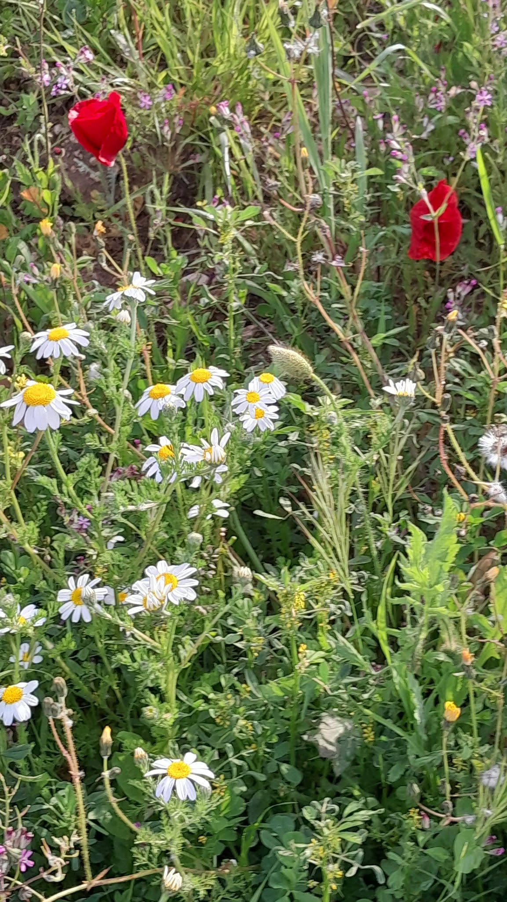

"Chante le printemps tes couleurs,
Comme une toile offerte au bonheur.
Que chaque nuance soit un frisson,
Une promesse douce à l’horizon.
Chante le printemps tes épis et tes fleurs,
Leur danse légère au rythme des heures.
Dans les champs dorés et les jardins ouverts,
Naît le murmure tendre de la terre.
Chante le printemps tes gazouillis et tes splendeurs,
Les oiseaux dessinent l’air de leurs ardeurs.
Chante encore, ô saison renaissante,
Ta lumière neuve, fragile et vibrante.
Dans ton souffle naît chaque espoir,
Dans ton chant se réinvente le soir.
De ta beauté s'inspirent les arts."
Nadjoua Bensalem
7 avril 2026

← Tous les poèmes